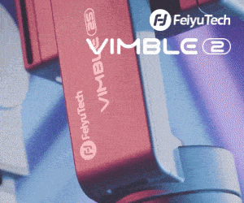

Portal-Kunst
Handbemalte Holzboxen, digitale Motivaufbereitung, Echtheitszertifikate und Merchandise. Auszeichnung mit dem Sonder-Jurypreis beim Polaris Art Contest 2026.
Portale entdeckenGESTALTUNG · TECHNIK · RECHERCHE
Ich bin Bianca Richwin, Mediengestalterin Digital und Print mit der Fachrichtung Gestaltung und Technik.
Mein Schwerpunkt liegt auf Layout, visueller Kommunikation und Bildbearbeitung – von der ersten Idee bis zur technisch sauberen Umsetzung. Ich verbinde gestalterisches Gespür mit einem strukturierten Blick auf Details, Produktionsabläufe und neue digitale Werkzeuge.
Aktuell erweitere ich meine Praxis durch eine Weiterbildung in KI-gestützter Mediengestaltung mit Adobe Creative Cloud.
 BIANCA RICHWIN · MEDIENGESTALTERIN
BIANCA RICHWIN · MEDIENGESTALTERIN
STATIONEN & ERFAHRUNGEN
Ein Weg durch Gestaltung, Handwerk und digitale Medien – mit Erfahrungen, die sich bis heute ergänzen.

alfatraining · Vollzeit
Erweiterung meiner gestalterischen Arbeit durch Adobe Creative Cloud, KI-Bildgenerierung und Promptentwicklung. Praxisprojekte verbinden unterschiedliche Gestaltungsvarianten mit nachvollziehbarer Dokumentation.
Adobe CC · Adobe Firefly · KI-Workflows

Network Punkt Hamburg UG · Hamburg
Erstellung, Adaption und Optimierung von Layouts, Reinzeichnung, komplexe Bildbearbeitung und Retusche. Dazu kamen Produktionsaufgaben und Recherchen.
Reinzeichnung · Retusche · Produktion

Pinneberg
Eigenständige Tätigkeit an der Schnittstelle von visueller Gestaltung und digitalen Projekten.
Digitaldesign · Kommunikation

TAXi-AD GmbH → UP-Advertising GmbH
Ausbildung in der Fachrichtung Gestaltung und Technik. Zunächst bei TAXi-AD (08/2018–06/2019), anschließend bei UP-Advertising (07/2019–06/2021). Abschluss 2021.
Print · Digital · Gestaltung & Technik
Woolworth · Elmshorn
Berufliche Station im Einzelhandel.

HTK – Akademie für Gestaltung · Hamburg
Schulische Ausbildung im Kommunikationsdesign; nicht abgeschlossen.
Friseur Klinck · Hamburg
Berufserfahrung im Friseurhandwerk nach der Gesellenprüfung.
Friseur Susan · Gesellenprüfung 06/2014
Mein beruflicher Weg begann im kreativen Handwerk – mit einem Blick für Formen, Farben und die Arbeit mit Menschen.
R. Schmidt · Praktikum und Ausbildung
Frühe praktische Erfahrungen im gestalterischen Handwerk.
WAS ICH MITBRINGE
Layout und Satz, Reinzeichnung, Druckdatenerstellung, Bildretusche und Farbkorrektur, Corporate Design sowie Print- und Digitalgestaltung.
Photoshop, Illustrator, InDesign, After Effects, Premiere Pro und Acrobat.
Affinity Designer, Photo und Publisher, Figma, Adobe XD, DaVinci Resolve, WordPress und OBS.
ChatGPT, Adobe Firefly, Prompt Engineering, Recherche, Bildgenerierung und gezielte Variantenoptimierung.
ÜBER DEN BERUF HINAUS
Handbemalte Holzboxen, digitale Motivaufbereitung, Echtheitszertifikate und Merchandise. Auszeichnung mit dem Sonder-Jurypreis beim Polaris Art Contest 2026.
Portale entdeckenFamilienforschung, Quellenanalyse und Archivarbeit. Ein Fachartikel zur Richwin-Forschung wurde für das Jahrbuch des Roland zu Dortmund eingereicht; die Veröffentlichung ist für Dezember 2026 vorgesehen.
Forschung entdecken